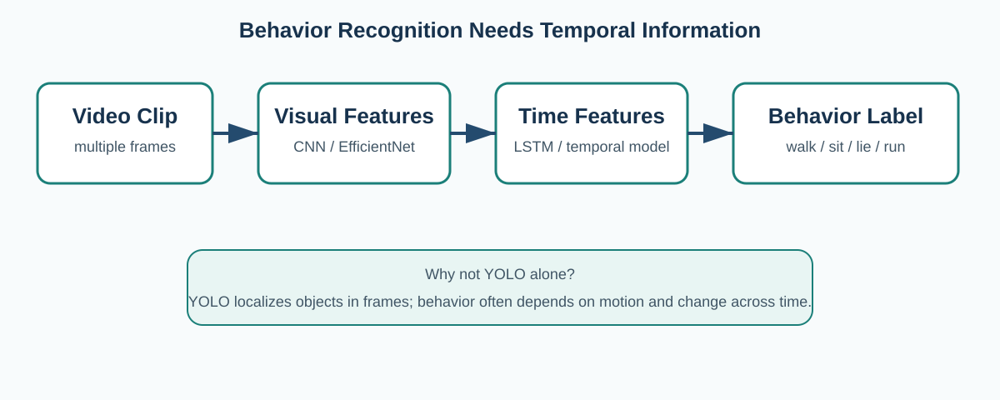

Pet Behavior Recognition
Behavior recognition is different from object detection. A dog can be detected in one image, but many behaviors are defined by movement over time. For this reason, video and temporal models are important.
Why a single frame is limited
Some postures, such as sitting or lying down, may be recognizable from one image. Other behaviors, such as walking, sniffing, running, pacing, or repetitive abnormal movement, depend on changes across multiple frames. A single still image may capture only one moment and lose the motion pattern.
Kim and Moon studied dog behavior recognition using both camera video and wearable sensor data. Their system recognized seven behaviors and compared several detection and fusion methods. They reported their best result using a CNN-LSTM fusion model with YOLOv4-based video detection, reaching about 93.4% accuracy in their study setting.[4]

CNN: learning visual appearance
A convolutional neural network (CNN) learns visual features from images. For pet behavior, these features may capture body shape, posture, orientation, and local visual patterns. Nolasco, Aldea, and Villaverde used an InceptionV3-based CNN to classify dog activities such as sitting, standing, and lying down on a Raspberry Pi platform; their reported test accuracy was 88% on a 50-sample test set.[6]
This type of image classifier is attractive for small edge devices because it can be simpler than a full video model. The limitation is that it does not directly model long temporal patterns.
LSTM and temporal modeling
An LSTM is a recurrent neural network designed to use information across a sequence. Instead of treating every frame independently, it can learn how features change over time. This makes it useful when the difference between two behaviors depends on movement, duration, or ordering.
Atif and colleagues built a dog health and welfare monitoring system that first detected and cropped dog image sequences, then used a two-stream EfficientNetV2 design for appearance and optical-flow motion features, followed by an LSTM for behavior recognition. They reported an average F1 score of 0.955 for behavior recognition in their experiments.[5]
Multimodal behavior recognition
Camera data can be combined with wearable sensors. Kim and Moon used accelerometer and gyroscope information together with video. The motivation is that one source can help when the other is noisy. For example, a camera may have trouble when furniture blocks the pet, while a wearable sensor can still measure movement. On the other hand, a camera provides contextual information that a collar sensor does not show.[4]
Recent research direction: deeper temporal context
A 2025 survey by Fazzari and colleagues divides deep-learning animal behavior approaches into pose-estimation and non-pose-estimation families and discusses recurrent, convolutional, and other methods for sequence analysis.[7] This broader review shows that there is no single universal method for all animal behavior tasks.
More recent canine research also emphasizes time. Guo and colleagues introduced TP-CanineNet for abnormal behavior detection in dogs left alone at home. Their model was designed to capture local and global temporal dependencies and reported a frame-level AUC of 85.19% and AP of 72.55% on their Alone-Dog dataset.[8]
Comparison of approaches
| Approach | What it uses | Strength | Limitation |
|---|---|---|---|
| Image CNN | One image or cropped frame | Simple and relatively efficient | Weak for behaviors defined mainly by motion |
| CNN + LSTM | Visual features over a sequence | Models appearance and time | More computation and labeled video needed |
| Two-stream video | RGB appearance + motion/optical flow | Explicit motion information | Extra processing for the motion stream |
| Camera + wearable | Video + accelerometer/gyroscope | Two data sources can complement each other | Requires the pet to wear hardware |
| Temporal anomaly model | Longer video context | Can focus on unusual patterns | Abnormal behavior labels are difficult to collect |
How behavior recognition fits the proposed system
The restricted-area module and the behavior module answer different questions. The restricted-area module asks where the pet is. The behavior module asks what the pet is doing. They can be combined to create more useful events. For example:
IF dog enters kitchen zone
AND behavior = "jumping / standing up"
FOR more than 2 seconds
THEN create high-priority alertThis is more informative than a single object-detection result. It also shows why YOLO should not be described as the behavior detector by itself.